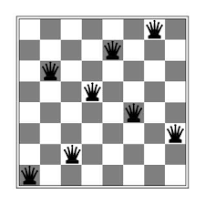

À PROPOS DE MOI
Je suis étudiant en informatique à l'IUT de Lannion, où je m'immerge dans les fondamentaux de ce
domaine en constante évolution. Autonome et créatif, j'aborde chaque projet avec une
énergie passionnée et une sérénité qui me permettent d'explorer de nouvelles idées et solutions.
Ma passion pour les jeux vidéo va au-delà de leur simple divertissement ; je suis fasciné par
leur conception, leur mécanique. Cette fascination m'a conduit à explorer de près les différentes
facettes de l'industrie du jeu, des aspects techniques aux éléments artistiques et narratifs
qui en font des oeuvres à part entière.
Au fil de mon parcours, je découvre une nouvelle passion émergeante : la cybersécurité. Fasciné par
les enjeux complexes de la protection des données et des systèmes informatiques, je commence à
explorer ce domaine en constante évolution. Conscient de l'importance croissante de la sécurité
numérique dans notre société interconnectée, je suis déterminé à approfondir mes connaissances et
à acquérir des compétences solides dans ce domaine crucial.
À travers mon portfolio, je vous invite à découvrir mes différents projets, Que ce soit un projet
universitaire ou personnel.
Mon dernier projet

Mes Diplômes

Baccalauréat STI2D
J'ai obtenu mon baccalauréat Sciences et Technologies de l'Industrie et du Développement Durable en 2023 au lycée Le Likes - La salle de Quimper avec l'option SIN (Système d'Information et Numérique).

BUT Informatique
Je suis actuellement en 1ère année de Bachelor universitaire de technologie en Informatique à l'IUT de Lannion.